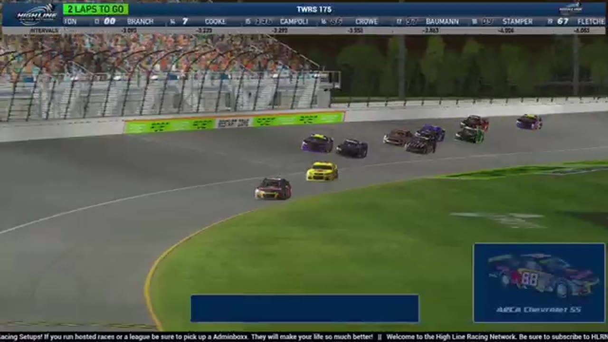

TWRS 175 at Chicagoland
Nick Bowman led the most laps, but Ethan Moreno pulled clear of Matt Brown and Kyle Cameron when the final lap arrived.

- Date
- July 13, 2026
- Track
- Chicagoland
- Race tape
- 2h 56m
- Exact chapters
- 18
Ethan Moreno reaches the record
The channel results readout lists Ethan Moreno, Matt Brown, Kyle Cameron, Dylan Jones, and Trevor Haley as the Chicagoland top five.
TAPE-SUPPORTED. Only explicitly supported positions are published; a nearby running order is never promoted into a finish.18 ways back into the race
Every link opens the complete broadcast at the reviewed timestamp. Chapter summaries are navigation claims unless explicitly marked as result-supported.
-
RESTART · OPENINGOPEN EXACT CUT
Chicagoland returns for the Season 2 opening green
S2 / R3 at 41:10: The official Chicagoland race broadcast reaches the opening green, with Ethan Moreno, Nick Bowman, and Bryce Hinton among the first drivers named. This cut begins before the launch and stays with the first live-race call.
-
INCIDENT · OPENINGOPEN EXACT CUT
Joshua Sprag crosses Trace McDowell to trigger Chicagoland's caution
The broadcast moves from Timothy Tyler to leader Trevor Haley when a caution appears. Replay finds Joshua Sprag moving across Trace McDowell's nose; the earlier on-screen drivers are not assigned to the crash.
-
BATTLE · MIDDLEOPEN EXACT CUT
Ethan Moreno and Nick Bowman carry the Chicagoland lead battle
S2 / R3 at 1:02:16: The Chicagoland pack compresses in a front-pack fight while Ethan Moreno and Nick Bowman are named on the call. The chapter keeps the live battle intact and makes no finishing-order claim.
-
RESTART · MIDDLEOPEN EXACT CUT
Ethan Moreno brings Chicagoland back to green
S2 / R3 at 1:03:27: Ethan Moreno is in the booth's front-pack call as Chicagoland returns to green. The cut keeps the restart launch and the first lap of lane development together.
-
INCIDENT · MIDDLEOPEN EXACT CUT
The No. 56 washes up and spins Nick Bowman at Chicagoland
After an initially unclear damage signal, replay shows the No. 56 washing up into Nick Bowman's No. 97 and turning the lap leader. HLRN then returns live to Trevor Haley and Brian Hayes at the front.
-
INCIDENT · MIDDLEOPEN EXACT CUT
Chicagoland's mystery caution stays unresolved on tape
Jerry Fassett tells the booth that he cannot locate the cause of the caution. Cory Cook and Nick Bowman had touched on the apron earlier, but HLRN explicitly says that contact did not trigger the yellow.
-
RESTART · MIDDLEOPEN EXACT CUT
Nick Bowman and Timothy Tyler bring Chicagoland back to green
S2 / R3 at 1:39:07: Nick Bowman and Timothy Tyler are in the booth's front-pack call as Chicagoland returns to green. The cut keeps the restart launch and the first lap of lane development together.
-
BATTLE · MIDDLEOPEN EXACT CUT
Jason Branch saves a wall slide without drawing a caution
Jason Branch brushes the wall, spins toward Ethan Moreno, and keeps the car off the grass before safely rejoining. HLRN replays what it calls a major save and explicitly confirms that no caution appeared.
-
INCIDENT · MIDDLEOPEN EXACT CUT
Joshua McKenna is caught in the Chicagoland caution replay
S2 / R3 at 2:01:34: The caution sequence centers the replay call on Joshua McKenna. This is a source-bounded incident window; it preserves what the booth reviews without assigning unsupported fault.
-
STRATEGY · MIDDLEOPEN EXACT CUT
Four tires put Nick Bowman atop Chicagoland's caution cycle
The caution prevents a green-flag pit stop and sends the leaders in for tires. Nick Bowman takes four and emerges ahead of Cory Cook, Trevor Haley, Bryce Hinton, and Vincent Guerrero in the booth's running-order check.
-
RESTART · CLOSINGOPEN EXACT CUT
Cory Cook and Nick Bowman bring Chicagoland back to green
S2 / R3 at 2:09:45: Cory Cook, Nick Bowman, Trevor Haley, and Dylan Jones are in the booth's front-pack call as Chicagoland returns to green. The cut keeps the restart launch and the first lap of lane development together.
-
BATTLE · CLOSINGOPEN EXACT CUT
Bryce Hinton brushes the wall during a pass before a separate yellow
Bryce Hinton completes a Helix-versus-Darkhorse pass despite brushing the wall. A yellow then appears for a separate Trace McDowell incident, which HLRN queues after finishing the pass replay.
-
INCIDENT · CLOSINGOPEN EXACT CUT
Trace McDowell becomes the focus after multiple Chicagoland signals
The caution arrives with separate Eric Hayden and Benjamin Richards damage signals. Replay instead locates Trace McDowell's No. 9, so the card preserves the broadcast's uncertain search rather than merging all three drivers.
-
INCIDENT · CLOSINGOPEN EXACT CUT
Nick Bowman and Bryce Hinton surface in the Chicagoland caution replay
S2 / R3 at 2:37:47: The caution sequence centers the replay call on Nick Bowman and Bryce Hinton. This is a source-bounded incident window; it preserves what the booth reviews without assigning unsupported fault.
-
STRATEGY · CLOSINGOPEN EXACT CUT
Chicagoland's repair cycle reshuffles the contenders
Shawn Stamper regains the lead lap while Nick Bowman remains on pit road for repairs or a possible tow. Donny Beach is a lap down, Cory Cook falls back, and Ethan Moreno inherits the front as Bryce Hinton rejoins.
-
FINISH · CLOSINGOPEN EXACT CUT
Ethan Moreno completes Chicagoland's final restart
Ethan Moreno controls the last restart, pulls clear through the final lap, and receives the live Chicagoland winner call with Matt Brown, Dylan Jones, and Kyle Cameron behind him.
-
INTERVIEW · CLOSINGOPEN EXACT CUT
Kyle Cameron explains the race from the booth
S2 / R3 at 2:47:03: Kyle Cameron and Ethan Moreno join the HLRN booth for a first-person race account. The interview is preserved as context and does not create a placement claim outside the accepted result ledger.
-
POSTRACE · CLOSINGOPEN EXACT CUT
Matt Brown and Ethan Moreno anchor the Chicagoland post-race result review
S2 / R3 at 2:48:28: The reviewed live-race close has passed before this Chicagoland result booth review begins with Matt Brown and Ethan Moreno named in the discussion. It remains post-race context, not a new incident, stage, strategy call, finish, or result receipt.
All 20 official winners are backed by position-specific calls in a primary broadcast or an HLRN-authored companion episode. Complete finishing orders, points, and starts remain open until owner records are supplied.